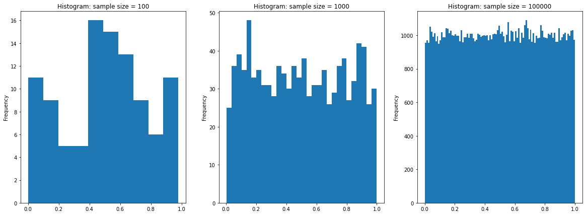
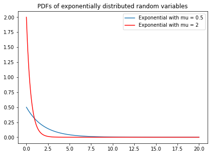
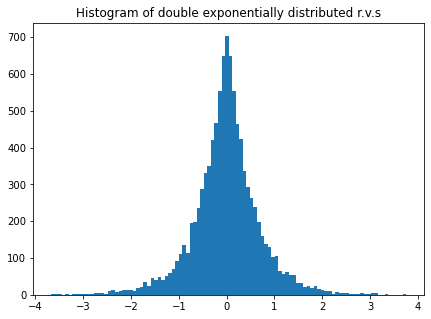

import numpy as np
import matplotlib.pyplot as pltSolutions to Assignment 2
ME200, Johannes Ruf and Luitgard Veraart
Exercise 6
Given an experiment with sample space \(S\), a random variable (r.v.) is a function from the sample space \(S\) to the real numbers.
A random variable \(X\) is said to be discrete if there is a finite list of values \(a_1,a_2,\cdots,a_n\) or an infinite list of values \(a_1,a_2,\cdots\) such that
\[P[X = a_j \text{ for some } j] = 1.\]
An r.v. has a continuous distribution if its CDF is differentiable.
Exercise 7
No. For example, let \(X\) and \(Y\) be independent and set \(Z = X\).
Exercise 8
Let \(Y\) be uniformly distributed on \([0,1]\) and set \(X = Y-1\). Then
\[ P\left[\left\{Y > \frac{1}{2}\right\} \cap \left\{X > \frac{-1}{2}\right\} \right] = \frac{1}{2} \neq \frac{1}{4} = P\left[\left\{Y > \frac{1}{2}\right\}\right] P\left[ \left\{X > \frac{-1}{2}\right\} \right]. \]
Let \(X = 0\) and \(Y = 1\) be deterministic.
Exercise 9
Write \(G\) for the CDF of \(Y\). Then
\[ G(y) = P[Y \leq y] = P[\mu + \sigma X \leq y] = P\left[X \leq \frac{y - \mu}{\sigma}\right] = F\left(\frac{y - \mu}{\sigma}\right). \]
## Exercise 10
sample_size1 = 100
sample_size2 = 1000
sample_size3 = 100000samples1 = np.random.random(size=sample_size1)
samples2 = np.random.random(size=sample_size2)
samples3 = np.random.random(size=sample_size3)fig, ax = plt.subplots(ncols=3, figsize=(20, 7)) # puts three plots next to each other; play with the code
ax[0].hist(samples1, bins=10)
ax[0].set_title(f"Histogram: sample size = {sample_size1}")
ax[0].set_ylabel(f"Frequency");
ax[1].hist(samples2, bins=30)
ax[1].set_title(f"Histogram: sample size = {sample_size2}")
ax[1].set_ylabel("Frequency");
ax[2].hist(samples3, bins=100)
ax[2].set_title(f"Histogram: sample size = {sample_size3}")
ax[2].set_ylabel("Frequency");
Of course, you were not expected to do such a complicated plot. But have a look at the code to understand how one put several plots next to each other.
As we increase the sample size, the histograms look more like the PDF of a uniform (namely constant on [0,1]).
Exercise 11
import numpy as np
import scipy.stats as stats
import matplotlib.pyplot as pltmu1 = 0.5
mu2 = 2x = np.linspace(0, 20, 1000)
pdf1 = stats.expon.pdf(x, scale=1/mu1)
pdf2 = stats.expon.pdf(x, scale=1/mu2)
# Note that for the scale we have to take the reciprocal of the parameter.fig, ax = plt.subplots(figsize=(7, 5))
ax.plot(x, pdf1, label=f'Exponential with mu = {mu1}')
ax.plot(x, pdf2, color='red', label=f'Exponential with mu = {mu2}')
ax.set_title("PDFs of exponentially distributed random variables");
ax.legend();
In the previous plot we put in two PDFs. Have a look how this was done, and how the legend was introduced.
Exercise 12
import numpy as np
import matplotlib.pyplot as pltmu = 2sample_size = 10000y = np.random.exponential(size=sample_size, scale=1/mu)
du = np.random.choice([-1, 1], size=sample_size)
samples = du * yfig, ax = plt.subplots(figsize=(7, 5))
ax.hist(samples, bins=100);
ax.set_title('Histogram of double exponentially distributed r.v.s');